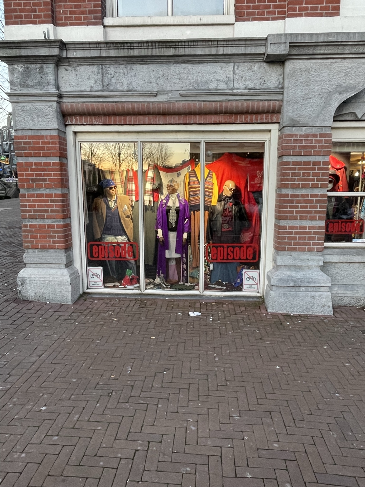
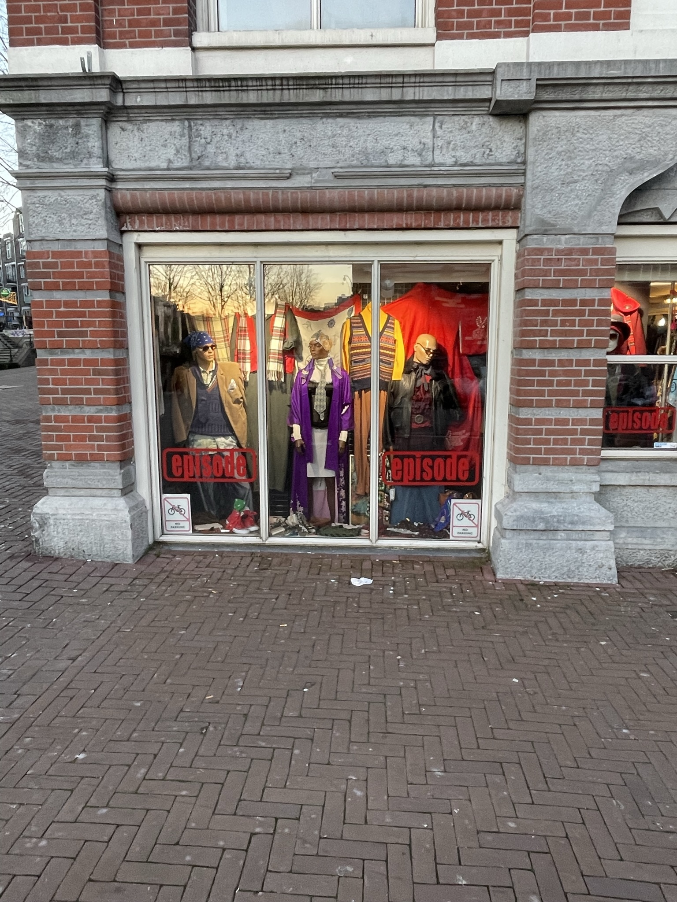

Episode
Episode is net als de kilo store een van de grootste vintage winkels in amsterdam. Het concept van de winkel is niet heel anders van andere vintage winkels, maar ze hebben wel een eigen procedure hoe zei omgaan met de geleverde producten. Episodes ontvangt super veel fashion items, de fashion items worden gecheckt op kwaliteit en beschadegingen, soms zijn er producten die mooi zijn maar een beetje beschadigd zijn en deze worden door Episode gerepareerd. Ook worden alle items gewassen voordat ze in de winkels worden gezet, dit doet niet elke vintage winkel en dit is wat hun onderscheid van de rest.

Doel van Episode
Het doel van het bedrij Episode is zo veel mogelijk producten verkopen van goede kwaliteit en een voordelige prijs. Alles wat binnen komt word gewassen voordat het in de winkel terecht komt en als Episode medewerkers een product leuk vinden maar het product is beschadiged dan zorgen ze ervoor dat dit word gerepareed.
Duurzaamheid
Duurzaamheid is een element wat erg belangijk is voor deze winkel. Dat is ook een van de redenen dat zei beschadigden producten zelf weer repareren, het is namelijk zonde als je een mooi product hebt en het weg moet doen, omdat het een beetje beschadigd is.
Mijn persoonlijke kijk op Episode
Ik ga persoonlijk best vaak naar Episode, ik vind het een fijne winkel om in te kijken. Ik heb ook veel items aangeschaft van Episode, die echt bij mij passen. Zelf vind ik Episode een hele fijne en duidelijke winkel, ik weet waar ik naartoe moet maar misschien komt dit omdat ik er vaak kom.
 
